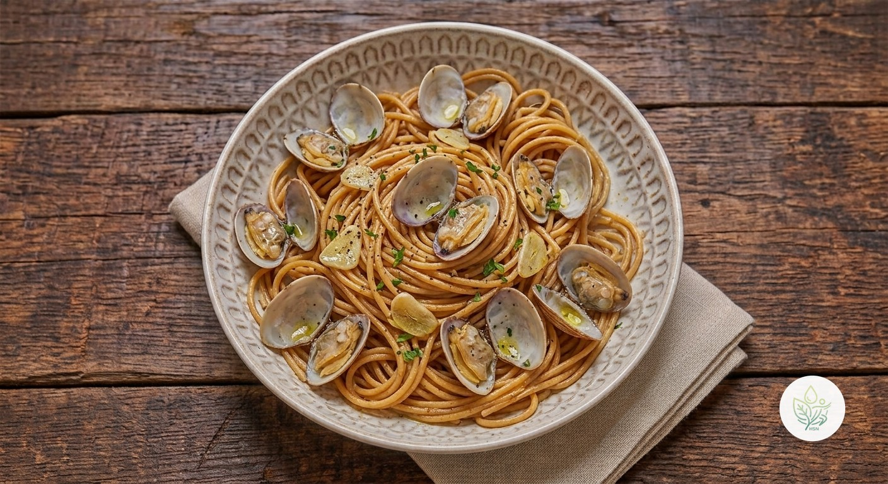

Espaguetis Integrales con Almejas
BEspaguetis integrales con almejas al ajo y limón: un plato marinero y rápido, con 24 g de proteína y 7,6 g de fibra por ración.
La pasta integral aporta fibra y carbohidrato de absorción lenta, y las almejas, proteína y minerales con muy poca grasa: solo 10,7 g de grasa y 1,6 g de saturada por ración. Lo calificamos B por el colesterol dietético de las almejas, igual que el resto de mariscos.
Ingredientes (toca el nombre para ver su ficha)
- 🌾 Pasta Integral (seca) 160 g
- 🐚 Almejas 200 g
- 🧄 Ajo 8 g
- 🫒 AOVE (aceite de oliva virgen extra) 15 g
- 🍋 Limón 20 g
Elaboración
- Deja las almejas en agua fría 30 minutos para que suelten la arena (unos 600 g con concha dan unos 200 g de carne). Cuece los espaguetis integrales en agua sin sal el tiempo del paquete y reserva un vaso del agua.
- Sofríe el ajo laminado en el AOVE a fuego suave 1 minuto, sin que llegue a dorarse.
- Añade las almejas, tapa y cocina 3-4 minutos hasta que se abran; descarta las que sigan cerradas.
- Incorpora la pasta escurrida y un poco del agua de cocción, mezcla un minuto a fuego vivo y termina con un chorrito de limón.
Información nutricional (receta completa, 2 raciones)
De las grasas, 3.1 g son saturadas · de los carbohidratos, 5.4 g son azúcares · sodio: 125 mg
Información nutricional (por ración)
De las grasas, 1.6 g son saturadas · de los carbohidratos, 2.7 g son azúcares · sodio: 62.5 mg
Preguntas frecuentes
¿Cuántas calorías tiene la receta de Espaguetis Integrales con Almejas?
Toda la receta de Espaguetis Integrales con Almejas tiene 858.3 kcal repartidas en 2 raciones, es decir, unas 429.1 kcal por ración.
¿Puedo usar almejas congeladas o de bote?
Sí; las congeladas se descongelan en la nevera, y las de bote ya vienen cocidas: añádelas al final y ten en cuenta que llevan más sodio.
¿Cuánta pasta es una ración?
Aquí 80 g en seco por persona, que al cocerse dan unos 190 g de pasta integral cocida.
¿Por qué no añado sal?
Las almejas ya aportan sabor a mar; prueba antes de añadir nada.